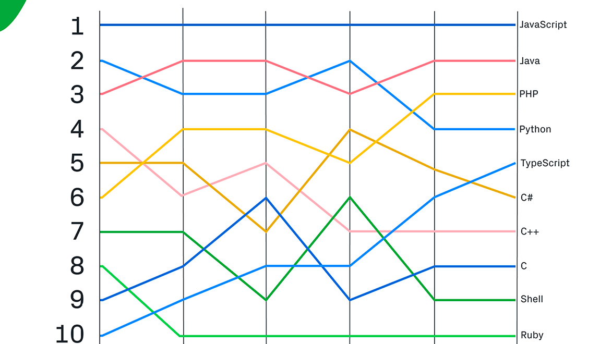
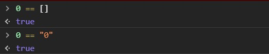
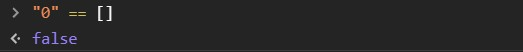

TypeScript is an open-source language which builds on JavaScript, one of the world’s most used tools, by adding static type definitions.
Types provide a way to describe the shape of an object, providing better documentation, and allowing TypeScript to validate that your code is working correctly.
Writing types can be optional in TypeScript, because type inference allows you to get a lot of power without writing additional code.
Typescript does not stand still and is growing very fast this is evidenced by the rating of GitHub
TypeScript is a relatively new language. It was launched for public use in October 2012, as the version 0.8 of the language. It was a result of two years of developed at Microsoft, with Anders Hejlsberg, the lead architect of c#, as well as the creator of Delphi and Turbo Pascal working on the project too.
TypeScript is just JavaScript. TypeScript starts with JavaScript and ends with JavaScript. Typescript adopts the basic building blocks of your program from JavaScript. Hence, you only need to know JavaScript to use TypeScript. All TypeScript code is converted into its JavaScript equivalent for the purpose of execution.
TypeScript supports other JS libraries. Compiled TypeScript can be consumed from any JavaScript code. TypeScript-generated JavaScript can reuse all of the existing JavaScript frameworks, tools, and libraries.
JavaScript is TypeScript.This means that any valid .js file can be renamed to .ts and compiled with other TypeScript files.
TypeScript is portable. TypeScript is portable across browsers, devices, and operating systems. It can run on any environment that JavaScript runs on. Unlike its counterparts, TypeScript doesn’t need a dedicated VM or a specific runtime environment to execute.
Strong Static Typing. JavaScript is not strongly typed. TypeScript comes with an optional static typing and type inference system through the TLS (TypeScript Language Service). The type of a variable, declared with no type, may be inferred by the TLS based on its value.
First of all it is static typing. Static typing allows to avoid a lot of errors associated with dynamic typing of javascript
Second one is typescipt allows to avoid errors in JavaScript associated with implicit casting like that:
So we can see that
Logically, we can assume if 0 == [] returns true and 0 == "0" returns true, that "0" == [] also returns true
But ...
One of the biggest disadvantage of JavaScript is this is his unpredictability
In conclusion I would like to say that TypeScript is very good technology with good potential, it will not replace JavaScript soon, but Big companies begin to actively use it now